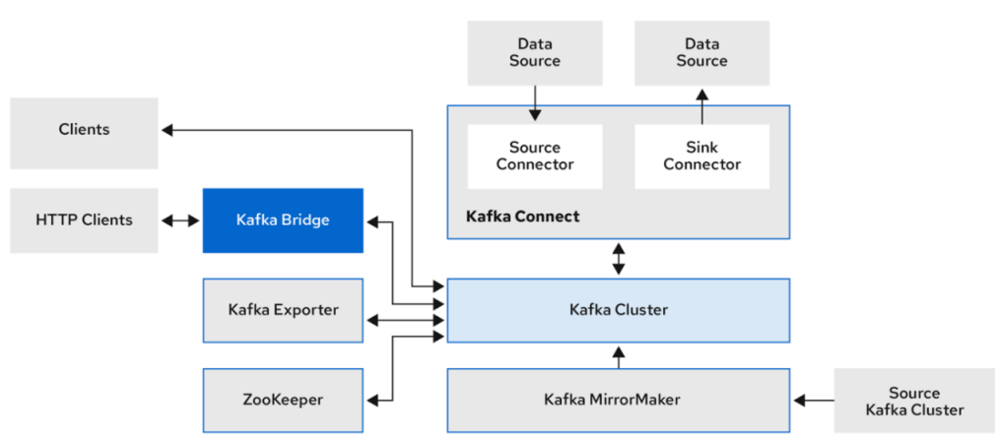
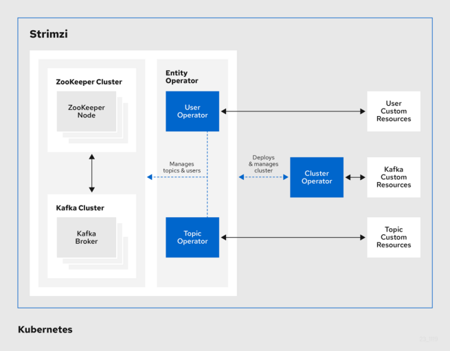
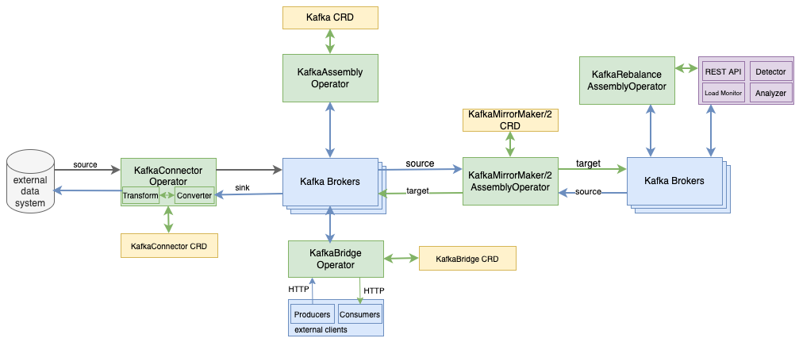
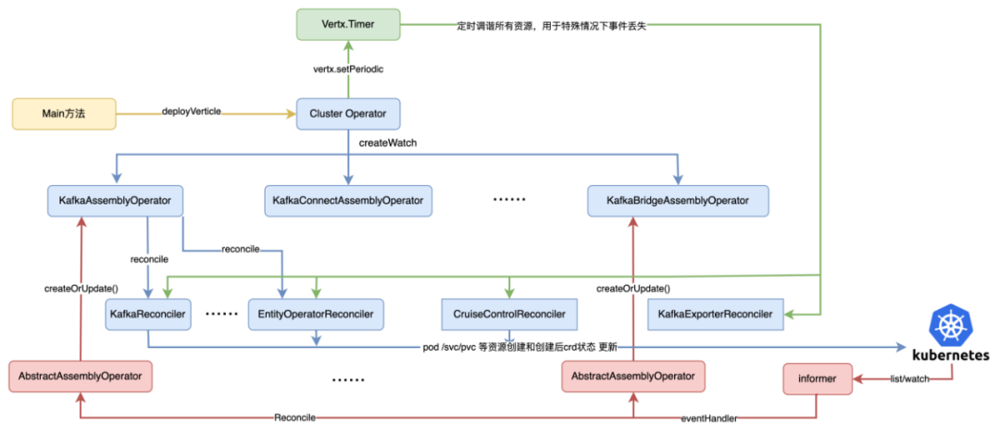
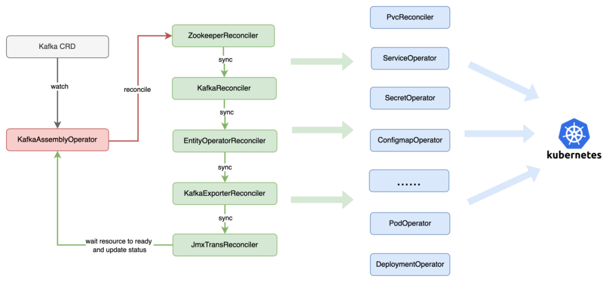

Kafka Operator 实践和解析
一、背景
基于 K8s Operator 模式开发的应用程序因其具有全生命周期的自动化管理、可扩展性强和故障自愈等特点，成为云化方案落地的重要方向。业界中主流的 Kafka Operator on K8s 方案分别有 Strimzi 社区推出的 strimzi-kafka-operator和 banzaicloud 公司推出的 koperator。相较于 koperator，strimzi-kafka-operator 具有更完善 Kafka 的上下游生态、自定义 Operator 扩展性强和可定制等特点。
二、Strimzi Kafka Operator 介绍
Strimzi Kafka Operator 基于 fabric8 k8s client 实现的 Kafka Operator，为 K8s 上自动化部署、管理和监控多套 Kafka 集群，提供了一种高度可扩展和可靠的解决方案。
Strimzi Kafka Operator 具有集群快速一键化部署、通用的 Kafka 集群管理、跨集群的数据复制、丰富的大数据数据源对接、统一的监控和告警、集群故障管理和数据 Rebalance 等功能。

strimzi kafka operator支持Kafka集群及周边生态
- Cluster Operator：负责 Kafka 集群及其周边生态工具的所有 Operators 封装;
- Entity Operator：负责创建当前 Kafka 集群中 User Operator 和 Topic Operator 实例;
- User Operator：负责当前 Kafka 集群中不同类型 User 认证、鉴权和访问控制；
- Topic Operator：负责当前 Kafka 集群中的 Topic 管理。

https://strimzi.io/docs/operators/latest/overview
三、安装部署和使用
1、Cluster Operator 部署
(1) k8s 中创建名为 kafka-operator 的 namespace: kubectl create ns kafka-operator
(2) 安装 strimzi kafka operator：
- 打开官方在线部署的 yaml 文件并下载：
curl -L https://strimzi.io/install/latest?namespace=kafka-operator > strimzi-kafka-operator.yaml
-
修改
STRIMZI_NAMESPACE环境变量值为*，以便Cluster operator管理所有 namespace 下的 kafka 集群 -
创建
ClusterRoleBindings，为Cluster operator授予所有namespace的访问权限
strimzi-kafka-operator.yaml
...
env:
- name: STRIMZI_NAMESPACE
value: "*"
# valueFrom:
# fieldRef:
# fieldPath: metadata.namespace
...
kubectl create clusterrolebinding strimzi-cluster-operator-namespaced --clusterrole=strimzi-cluster-operator-namespaced --serviceaccount kafka-operator:strimzi-cluster-operator
kubectl create clusterrolebinding strimzi-cluster-operator-watched --clusterrole=strimzi-cluster-operator-watched --serviceaccount kafka-operator:strimzi-cluster-operator
kubectl create clusterrolebinding strimzi-cluster-operator-entity-operator-delegation --clusterrole=strimzi-entity-operator --serviceaccount kafka-operator:strimzi-cluster-operator
查看安装后的 Cluster Operator pod 是否为 Running:
kubectl create -f strimzi-kafka-operator.yaml kubectl -n kafka-operator get pods -w
$ kubectl get pods -n kafka-operator
NAME READY STATUS RESTARTS AGE
strimzi-cluster-operator-78dd4f6d84-h4g2j 1/1 Running 2 (100m ago) 35h
2、kafka 实例创建
本小节将演示如何使用 Cluster Operator 将临时存储的 kafka 实例部署到 k8s 集群中。
集群的创建中，首先创建多副本的 zookeeper pod，创建完成后开始 kafka broker pod 创建。对于 ZK 和 Kafka 集群数据文件的存储，官方示例中提供了临时存储（EmptyDir）、块存储（JBOD）和持久化存储（PVC）三种形式样例。
kubectl apply -f https://strimzi.io/examples/latest/kafka/kafka-ephemeral-single.yaml -n kafka
$ kubectl get pods -n kafka
NAME READY STATUS RESTARTS AGE
my-cluster-zookeeper-0 1/1 Running 1 (12h ago) 35h
my-cluster-zookeeper-2 1/1 Running 1 (35h ago) 35h
my-cluster-zookeeper-1 1/1 Running 1 (35h ago) 35h
my-cluster-kafka-0 1/1 Running 2 (12h ago) 35h
my-cluster-entity-operator-64dc7c8844-mtmtf 3/3 Running 5 (12h ago) 35h
3、kafka 实例生产消费
本小节将演示如何，连接 kafka 实例对外暴露的服务，并进行消息的生产和消费。
Session 1
$ kubectl -n kafka run kafka-producer -ti --image=quay.io/strimzi/kafka:0.38.0-kafka-3.6.0 --rm=true --restart=Never -- bin/kafka-console-producer.sh --bootstrap-server my-cluster-kafka-bootstrap:9092 --topic test
If you don't see a command prompt, try pressing enter.
>test
[2023-12-15 15:34:59,001] WARN [Producer clientId=console-producer] Error while fetching metadata with correlation id 4 : {test=LEADER_NOT_AVAILABLE} (org.apache.kafka.clients.NetworkClient)
>test
>llll
Session 2
kubectl -n kafka run kafka-consumer -ti --image=quay.io/strimzi/kafka:0.38.0-kafka-3.6.0 --rm=true --restart=Never -- bin/kafka-console-consumer.sh --bootstrap-server my-cluster-kafka-bootstrap:9092 --topic test --from-beginning
If you don't see a command prompt, try pressing enter.
test
llll
四、Cluster Operator 技术实现
本节详细分析 Cluster Operator 技术实现的核心细节，主要介绍 Cluster Operator 中多种 CRD 资源的定义和对应资源 Operator 的整体调用流程，并重点分析 Kafka 集群创建过程中各个环节的调谐步骤。
1、Cluster Operator 整体架构
Cluster Operator 是 Strimzi Kafka Operator 中的核心模块，封装了 Kafka 集群管理及其周边生态工具的 CRD 资源，并基于观察者模式的事件注册和 K8s Informer 机制，执行不同类型 Operator 的 Reconcile（调谐）逻辑。Cluster Operator 中对 Kafka 集群及其周边生态工具的操作，主要由 6 种 KafkaAssemblyOperator 类型来实现。
其中，KafkaAssemblyOperator 负责整个 Kafka 集群创建、持久化存储挂载和对外安全链路访问等。
KafkaConnectAssemblyOperator 创建 Kafka Connect 服务实现从外部系统导入或导出数据。KafkaBridgeAssemblyOperator 启动 Kafka Bridge 服务，基于 HTTP REST API 方式操作 Kafka 集群实例。
KafkaMirrorMaker/2AssemblyOperator 完成不同 Kafka 集群之间的数据复制工作，实现跨数据中心的集群高可用。
KafkaRebalanceAssemblyOperator 与 Cruise Control 工具的 REST API 交互，向其发送 Rebalance 请求，并监听 Kafka 集群 Rebalance 的执行状态。

Cluster Operator中各个AssemblyOperator组件调用流程
当 Cluster Operator Pod 运行时，首先创建各个 CRD 资源所需的 ClusterRoles，并开启 Cluster Operator pod 选主功能，支持 Cluster Operator 多副本；
其次，依次为每个被管理的 Kafka 实例创建 verticles 对象，用于处理 ClusterOperator 整体逻辑。
针对 Cluster Operator 下不同类型的 AssemblyOperator，调用 CRD 资源的 SharedInformer 注册对应的 EventHandler，并根据 workqueue pop 出的 Reconciliation 对象，执行不同 CRD 资源的调谐逻辑。
各个调谐逻辑根据 CRD 资源 Spec 定义的内容，调用 K8s API Server 创建 Pod、Deployment、Service、ConfigMap、PVC、Secret 等内置资源对象，并将创建后的状态数据更新到 K8s 中。

2、Kafka 集群创建 Reconcile 流程
KafkaAssemblyOperator Reconcile 过程中，主要包括 Kafka 集群和相关依赖的 ZK、Entity Operator、KafkaExporter 和 JMX 组件的 Reconcile。其中，Kafka broker 核心 k8s 底层资源的 Reconcile 流程有：
- 存储调谐：支持动态创建和扩容不同类型的存储，例如 EmpityDir、JBOD 和 PVC 等；
- Service 调谐：根据 KafkaClusterSpec 中 listeners 定义，以及 Kafka 内置的管理面和控制面 listener，支持 Routes、Ingress、Internal、LoadBalancer、NodePort、ClusterIP 类型的 service 创建。
- Secret 调谐：用于配置 broker 节点之间加密认证，生成基于自签名 CA 证书的公钥和私钥，并写入到 Secret 中；
- ConfigMap 调谐：创建和动态更新 kafka 集群每个 broker 配置项，以及 metrics 和日志相关的配置，并写入到 ConfigMap 中；
- Pod 调谐：创建 kafka broker 的 pod，包括对 pod spec 字段中的 initContainers 和 containers 中的 ports、volumes、volumeMount、 imagePullSecret、hostAliases、livenessProbe 和 readinessProbe 等字段传参赋值；
- 各种资源创建后的状态检查：对 pods、serviceEndpoints、listener 等资源创建后的状态校验，直到资源状态变为 Ready。

总结
和传统线下自建 Kafka 集群相比，基于 Strimzi Kafka Operator 容器化的 Kafka 服务，具有 Kafka 集群和周边生态的自动化管理、可扩展性强、故障恢复和自愈等优点，并且提供一站式的监控、日志、告警等能力的集成。